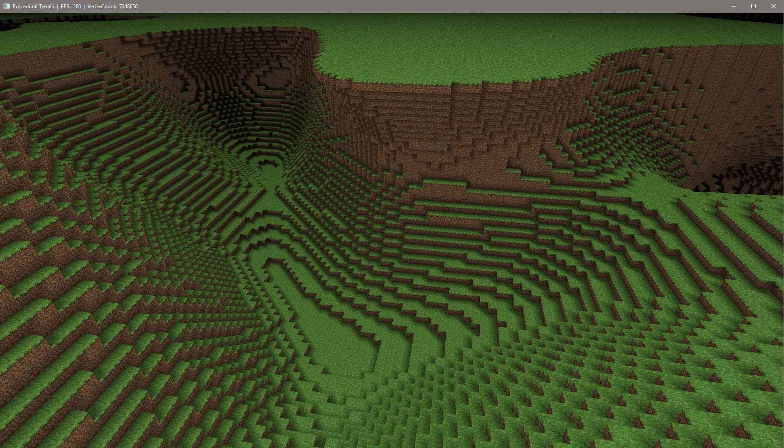
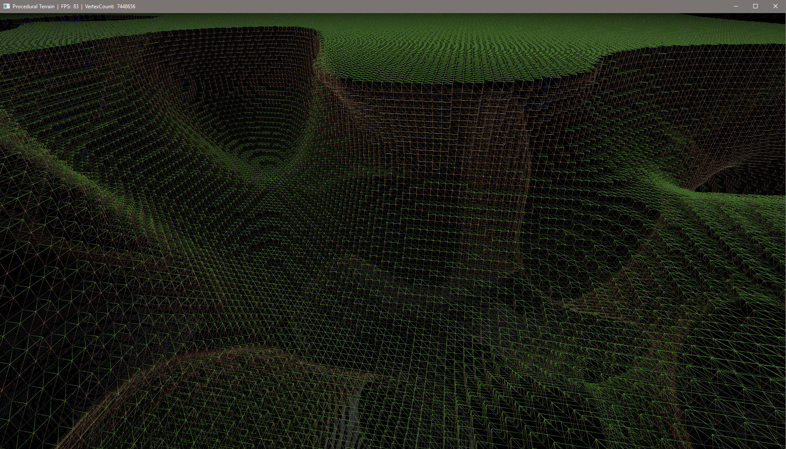
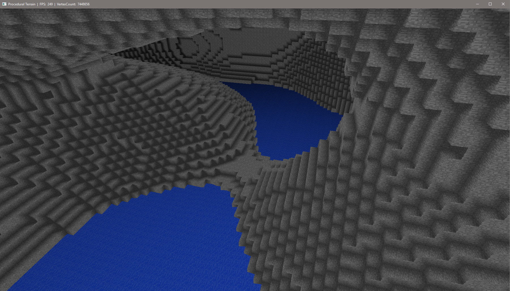
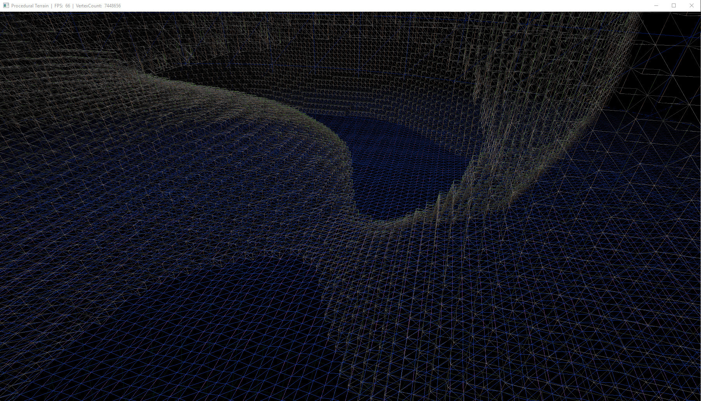
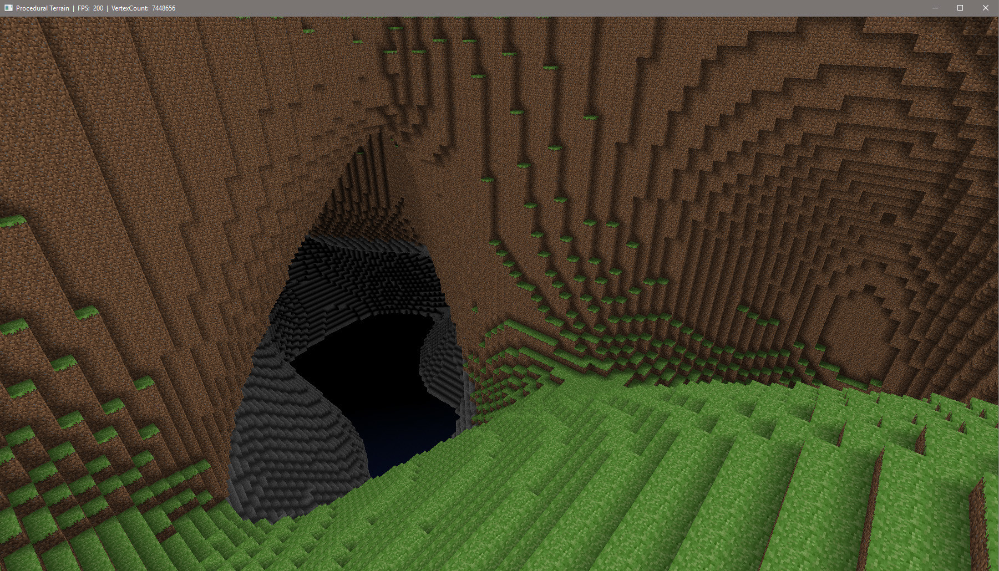

I developed this project in 2017 to study low level graphical programming, and to learn how to generate 3d models procedurally. in this case the voxels.
7+ million vertices at 200fps on a GTX 1050Ti




